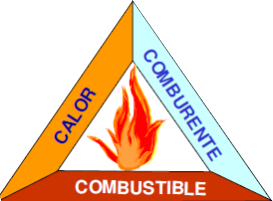

Origen del Fuego
El tetraedro del fuego representa a los 4 elementos necesarios para que el fuego pueda originarse:

El oxigeno y el combustible se encargan de mantener la combustion, el calor lleva al combustible a su estado de ignición y la reaccion entre los elementos, permite que el fuego se origine.
La privacion de cualquiera de estos 4 elementos, hará que el fuego no pueda generarse y en esto se basa el concepto de prevencion del fuego.